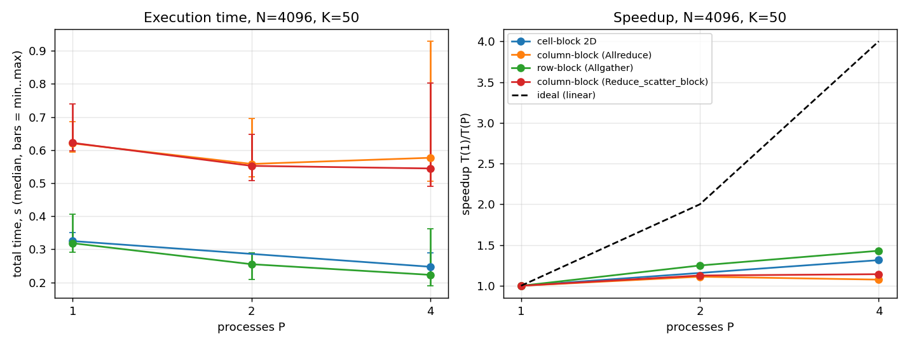
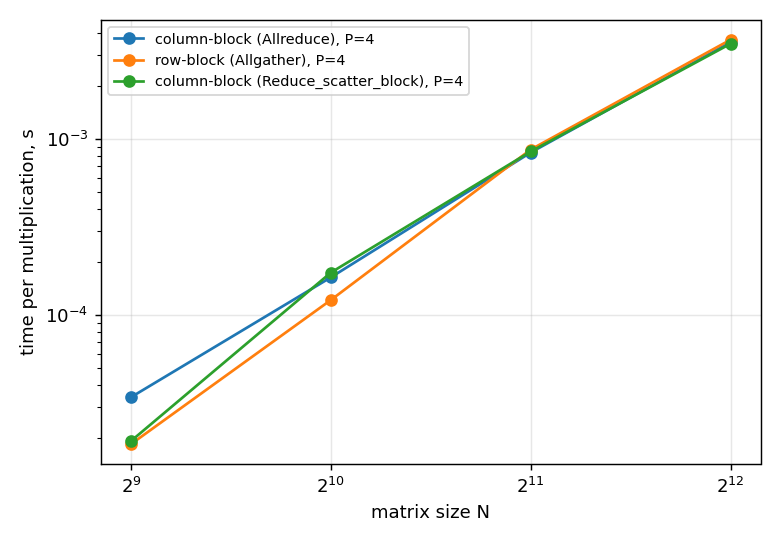
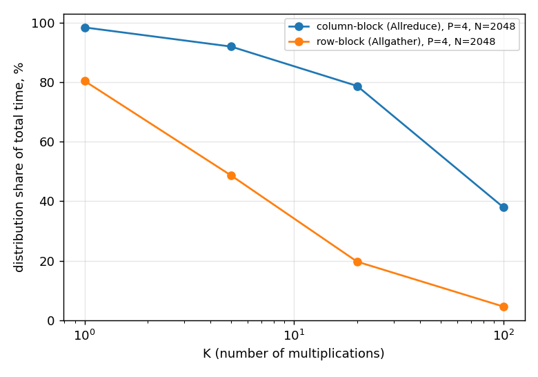
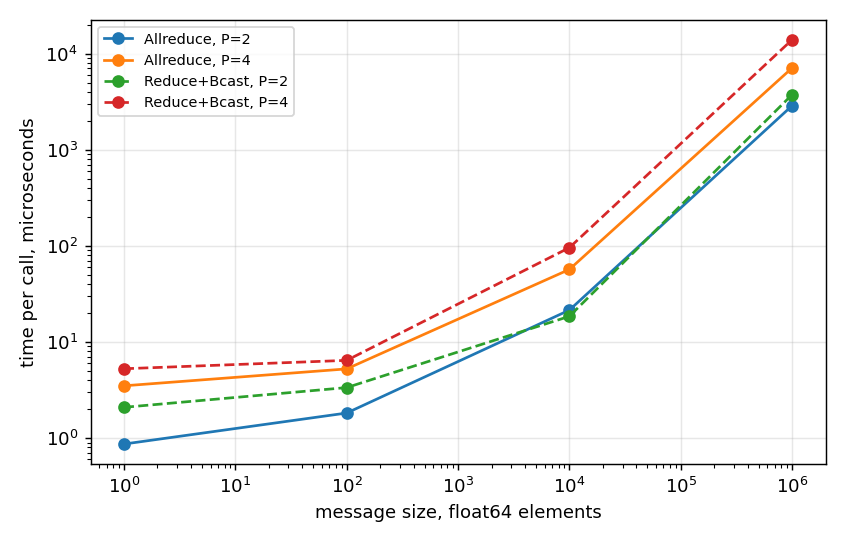

lscpu reports 1 socket, 7 cores per socket, 2 threads per core, so 7 physical cores are available to MPI.DYNAMIC_ARCH). All data is np.float64.OMP_NUM_THREADS=1, OPENBLAS_NUM_THREADS=1, MKL_NUM_THREADS=1, so every MPI process uses exactly one thread and there is no hidden second level of parallelism.prte-rmaps-base:alloc-error) because only 7 physical cores are visible. Running it with --oversubscribe would break the "do not oversubscribe" rule of the assignment, so $P = 8$ and $P = 16$ were not measured.comm.Barrier() and MPI.Wtime(). Each process measures its own time and the maximum over all processes is taken with comm.Reduce(..., op=MPI.MAX). Each configuration is run once as a warm-up (also checked against NumPy, not recorded) and then 10 times; tables report the median, plots also show min..max.Allgather.Allreduce(op=MPI.SUM).Allreduce gives both processes the complete $y$, but they do not need all of it: process 0 only needs $y[0:2]$ and process 1 only $y[2:4]$ as their next input. That is exactly what Reduce_scatter_block delivers (Bonus 6b).Allreduce every process holds the full new vector, keeps its own segment y[i*N/P:(i+1)*N/P] and the cycle repeats.task6_1.py, Ax_columnblock)Scatter of column blocks is impossible. Rank 0 builds np.ascontiguousarray(A.T): row block $i$ of $A^T$ is exactly column block $i$ of $A$ and it is contiguous, so one Scatter distributes all column blocks. Each process keeps local_AT ($N/P \times N$) and multiplies with the view local_AT.T, which BLAS handles as a transposed matrix-vector product without copying. $x$ is distributed with a second Scatter.np.dot(local_AT.T, x_local, out=z), then Allreduce(z, y, op=MPI.SUM) and x_local[:] = y[lo:hi].Allreduce is replaced by Reduce(..., root=0), which saves one broadcast of $N$ values.ValueError together if $N \bmod P \ne 0$, so no rank is left waiting inside a collective.a6_test.py)All four implementations (row-block, column-block, cell-block and the Reduce_scatter_block variant) are tested on the 4x4 example from the assignment and on identity, zero, diagonal and dense random matrices of size 8x8 and 64x64, each with $K = 0, 1, 2, 5, 10$. Only rank 0 receives $A$ and $x$, the other ranks get None. The result on rank 0 is compared with repeated sequential NumPy multiplication using np.testing.assert_allclose(rtol=1e-10, atol=1e-12); bitwise equality is not expected because the summation order differs. The cell-block version is skipped for $P = 2$ because it needs a square number of processes.
Raw Terminal Output (abbreviated, every line was PASS):
user@DESKTOP-AJAG7QD:/mnt/c/учёба/study/1_semester/parallel/hw6$ mpiexec -n 1 python3 a6_test.py
P = 1
[PASS] Ax_rowblock example 4x4 K=0
[PASS] Ax_rowblock example 4x4 K=1
... (180 lines, all PASS)
[PASS] Ax_cellblock dense 64x64 K=10
passed 180, failed 0, skipped 0 (method not applicable for P=1)
user@DESKTOP-AJAG7QD:/mnt/c/учёба/study/1_semester/parallel/hw6$ mpiexec -n 2 python3 a6_test.py
P = 2
[PASS] Ax_rowblock example 4x4 K=0
... (135 lines, all PASS)
[PASS] Ax_columnblock_rsb dense 64x64 K=10
passed 135, failed 0, skipped 45 (method not applicable for P=2)
user@DESKTOP-AJAG7QD:/mnt/c/учёба/study/1_semester/parallel/hw6$ mpiexec -n 4 python3 a6_test.py
P = 4
[PASS] Ax_rowblock example 4x4 K=0
... (180 lines, all PASS)
[PASS] Ax_cellblock dense 64x64 K=10
passed 180, failed 0, skipped 0 (method not applicable for P=4)
The row-block algorithm uses Bcast (whole $x$) and Scatter (row blocks) once, and Allgather between iterations, because every process computes different, already final elements of $y$ and everybody needs the whole vector in the next iteration. The column-block algorithm uses two Scatter calls once (column blocks via $A^T$, and segments of $x$), and Allreduce(SUM) between iterations, because every process holds a partial sum of all elements of $y$ and the partial sums have to be added; the last iteration uses Reduce to rank 0. Concatenation versus addition follows directly from what is split: splitting the rows splits the output, splitting the columns splits the inner sum of the product.
$N = 4096$ gives a 134 MB matrix, divides by every tested $P$ and makes one run long enough (0.2 to 0.6 s) to stay far above the timer resolution. The benchmark is task6_2.py. The speedup is computed both from the total time and from the multiplication phase alone, because the one-time distribution behaves very differently in the two algorithms.
Raw Terminal Output:
user@DESKTOP-AJAG7QD:/mnt/c/учёба/study/1_semester/parallel/hw6$ mpiexec -n 1 python3 task6_2.py --N 4096 --K 50 --runs 10 --methods row,col,rsb,cell --experiment scaling
row P= 1 N= 4096 K= 50 setup 0.0198s mult 0.2975s total 0.3183s (total min 0.2907 / max 0.4063, 10 runs)
col P= 1 N= 4096 K= 50 setup 0.3096s mult 0.3040s total 0.6202s (total min 0.5938 / max 0.6850, 10 runs)
rsb P= 1 N= 4096 K= 50 setup 0.3158s mult 0.3083s total 0.6217s (total min 0.5983 / max 0.7400, 10 runs)
cell P= 1 N= 4096 K= 50 setup 0.0408s mult 0.2849s total 0.3248s (total min 0.3130 / max 0.3513, 10 runs)
user@DESKTOP-AJAG7QD:/mnt/c/учёба/study/1_semester/parallel/hw6$ mpiexec -n 2 python3 task6_2.py --N 4096 --K 50 --runs 10 --methods row,col,rsb,cell --experiment scaling
row P= 2 N= 4096 K= 50 setup 0.0273s mult 0.2252s total 0.2548s (total min 0.2080 / max 0.2890, 10 runs)
col P= 2 N= 4096 K= 50 setup 0.3365s mult 0.2225s total 0.5580s (total min 0.5191 / max 0.6952, 10 runs)
rsb P= 2 N= 4096 K= 50 setup 0.3289s mult 0.2193s total 0.5522s (total min 0.5068 / max 0.6475, 10 runs)
skip cell: not applicable for N=4096, P=2
user@DESKTOP-AJAG7QD:/mnt/c/учёба/study/1_semester/parallel/hw6$ mpiexec -n 4 python3 task6_2.py --N 4096 --K 50 --runs 10 --methods row,col,rsb,cell --experiment scaling
row P= 4 N= 4096 K= 50 setup 0.0398s mult 0.1729s total 0.2226s (total min 0.1896 / max 0.3618, 10 runs)
col P= 4 N= 4096 K= 50 setup 0.4020s mult 0.1819s total 0.5766s (total min 0.5058 / max 0.9287, 10 runs)
rsb P= 4 N= 4096 K= 50 setup 0.3505s mult 0.2141s total 0.5443s (total min 0.4904 / max 0.8018, 10 runs)
cell P= 4 N= 4096 K= 50 setup 0.0630s mult 0.1831s total 0.2471s (total min 0.2264 / max 0.2887, 10 runs)| Method | P | Setup (s) | Mult (s) | Total (s) | S(P) total | E(P) total | S(P) mult | E(P) mult |
|---|---|---|---|---|---|---|---|---|
| row-block (Allgather) | 1 | 0.0198 | 0.2975 | 0.3183 | 1.00x | 100% | 1.00x | 100% |
| 2 | 0.0273 | 0.2252 | 0.2548 | 1.25x | 62% | 1.32x | 66% | |
| 4 | 0.0398 | 0.1729 | 0.2226 | 1.43x | 36% | 1.72x | 43% | |
| column-block (Allreduce) | 1 | 0.3096 | 0.3040 | 0.6202 | 1.00x | 100% | 1.00x | 100% |
| 2 | 0.3365 | 0.2225 | 0.5580 | 1.11x | 56% | 1.37x | 68% | |
| 4 | 0.4020 | 0.1819 | 0.5766 | 1.08x | 27% | 1.67x | 42% |

Execution time (median, bars show min..max of 10 runs) and total speedup with the ideal linear reference. The plot also contains the cell-block and Reduce_scatter_block variants discussed in Exercise 6.3 and Bonus 6b.
Raw Terminal Output:
user@DESKTOP-AJAG7QD:/mnt/c/учёба/study/1_semester/parallel/hw6$ mpiexec -n 4 python3 task6_2.py --N 512 1024 2048 4096 --K 50 --runs 10 --methods row,col,rsb --experiment size
row P= 4 N= 512 K= 50 setup 0.0003s mult 0.0009s total 0.0011s (total min 0.0010 / max 0.0024, 10 runs)
col P= 4 N= 512 K= 50 setup 0.0013s mult 0.0017s total 0.0029s (total min 0.0023 / max 0.0046, 10 runs)
rsb P= 4 N= 512 K= 50 setup 0.0009s mult 0.0010s total 0.0019s (total min 0.0018 / max 0.0021, 10 runs)
row P= 4 N= 1024 K= 50 setup 0.0011s mult 0.0061s total 0.0072s (total min 0.0063 / max 0.0098, 10 runs)
col P= 4 N= 1024 K= 50 setup 0.0089s mult 0.0082s total 0.0176s (total min 0.0139 / max 0.0298, 10 runs)
rsb P= 4 N= 1024 K= 50 setup 0.0075s mult 0.0087s total 0.0166s (total min 0.0124 / max 0.0216, 10 runs)
row P= 4 N= 2048 K= 50 setup 0.0049s mult 0.0436s total 0.0481s (total min 0.0442 / max 0.0759, 10 runs)
col P= 4 N= 2048 K= 50 setup 0.0617s mult 0.0419s total 0.1036s (total min 0.0996 / max 0.1907, 10 runs)
rsb P= 4 N= 2048 K= 50 setup 0.0605s mult 0.0425s total 0.1033s (total min 0.0951 / max 0.1131, 10 runs)
row P= 4 N= 4096 K= 50 setup 0.0319s mult 0.1833s total 0.2151s (total min 0.1935 / max 0.3156, 10 runs)
col P= 4 N= 4096 K= 50 setup 0.3305s mult 0.1773s total 0.5095s (total min 0.4970 / max 0.5736, 10 runs)
rsb P= 4 N= 4096 K= 50 setup 0.3329s mult 0.1739s total 0.5220s (total min 0.4753 / max 0.5814, 10 runs)| N | Matrix size | row: ms / mult | col: ms / mult | rsb: ms / mult | row: matrix read rate |
|---|---|---|---|---|---|
| 512 | 2 MB | 0.018 | 0.034 | 0.020 | ~116 GB/s |
| 1024 | 8 MB | 0.122 | 0.164 | 0.174 | ~69 GB/s |
| 2048 | 34 MB | 0.872 | 0.838 | 0.850 | ~38 GB/s |
| 4096 | 134 MB | 3.666 | 3.546 | 3.478 | ~37 GB/s |

The last column divides the matrix size by the time of one row-block multiplication, i.e. how fast the 4 processes together stream the matrix from memory.
Raw Terminal Output:
user@DESKTOP-AJAG7QD:/mnt/c/учёба/study/1_semester/parallel/hw6$ mpiexec -n 4 python3 task6_2.py --N 2048 --K 1 5 20 100 --runs 10 --methods row,col --experiment amortisation
row P= 4 N= 2048 K= 1 setup 0.0042s mult 0.0009s total 0.0053s (total min 0.0048 / max 0.0130, 10 runs)
col P= 4 N= 2048 K= 1 setup 0.0661s mult 0.0011s total 0.0672s (total min 0.0614 / max 0.0714, 10 runs)
row P= 4 N= 2048 K= 5 setup 0.0041s mult 0.0043s total 0.0083s (total min 0.0080 / max 0.0097, 10 runs)
col P= 4 N= 2048 K= 5 setup 0.0815s mult 0.0068s total 0.0887s (total min 0.0783 / max 0.1072, 10 runs)
row P= 4 N= 2048 K= 20 setup 0.0044s mult 0.0176s total 0.0222s (total min 0.0209 / max 0.0229, 10 runs)
col P= 4 N= 2048 K= 20 setup 0.0745s mult 0.0203s total 0.0947s (total min 0.0825 / max 0.1087, 10 runs)
row P= 4 N= 2048 K= 100 setup 0.0045s mult 0.0929s total 0.0975s (total min 0.0887 / max 0.1057, 10 runs)
col P= 4 N= 2048 K= 100 setup 0.0747s mult 0.1217s total 0.1969s (total min 0.1812 / max 0.2596, 10 runs)| K | row: setup share | col: setup share | col total / row total |
|---|---|---|---|
| 1 | 79% | 98% | 12.7x |
| 5 | 49% | 92% | 10.7x |
| 20 | 20% | 79% | 4.3x |
| 100 | 5% | 38% | 2.0x |

Both methods do about $N^2/P$ multiply-adds per iteration. Why can their runtimes differ?
np.ascontiguousarray(A.T) on rank 0: transposing 134 MB reads the matrix with a stride of 32 KB between consecutive elements, which defeats the caches and the hardware prefetcher. The row version scatters the matrix in the order it already has in memory.Allgather moves $N/P$ elements from every process, while Allreduce combines a full length-$N$ vector from every process and also performs the additions. At $N = 512$, where communication is a visible part of a 20 µs iteration, the column version is about 2x slower per multiplication (0.034 ms vs 0.018 ms); at $N = 2048$ it is still 10 to 30% slower in Experiment C. At $N = 4096$ a 32 KB vector is negligible next to 134 MB of matrix data and the difference disappears in the noise.Scatter for $x$) and a Reduce at the end; this is small but counts at small $N$.Which communication operation does each method use between iterations? Row-block: Allgather (concatenation of final segments). Column-block: Allreduce(SUM) (addition of partial sums), with Reduce in the last iteration.
When does increasing $P$ stop helping?
Does the method that is fastest for one $N$ or $P$ remain fastest for all sizes? For the total time the row-block method was fastest in every measured configuration, because its distribution is 7 to 15 times cheaper. Looking only at the multiplication phase, the ranking is not stable: row-block wins clearly at small $N$ (512, 1024), where the smaller Allgather matters, while at $N = 2048$ and $4096$ all variants are within about 5%, which is inside the run-to-run noise. Experiment C shows that a larger $K$ amortises the setup (the column version's setup share falls from 98% at $K = 1$ to 38% at $K = 100$), but because the column version is not faster per iteration either, it never overtakes the row version on this machine.
task6_3.py, Ax_cellblock, steps 6.3a and 6.3b)Create_cart([p, p], reorder=False), so world rank $r$ has grid coordinates $(i, j)$. Two subcommunicators are created: row_comm (processes $(i, 0..p-1)$, rank inside = $j$) and col_comm (processes $(0..p-1, j)$, rank inside = $i$).Scatter calls. Process $(i, j)$ needs exactly $x_j$, because $A_{ij}$ only touches the columns of block $j$.row_comm.Reduce. For a 2x2 grid this is literally $y_0 = A_{00} x_0 + A_{01} x_1$ and $y_1 = A_{10} x_0 + A_{11} x_1$.col_comm.Bcast(root=j): the diagonal process $(j, j)$ owns $y_j$, and every process in column $j$ needs it. Each iteration costs one Reduce and one Bcast, both on messages of only $N/p$ elements.col_comm.Gather in column 0 assembles the complete $y$ on process $(0, 0)$, which is rank 0.| Method | Setup (s) | Mult (s) | Total (s) |
|---|---|---|---|
| row-block | 0.0398 | 0.1729 | 0.2226 |
| column-block | 0.4020 | 0.1819 | 0.5766 |
| cell-block 2D | 0.0630 | 0.1831 | 0.2471 |
The 2D version is as fast as the 1D versions in the multiplication phase and slightly behind the row-block version overall: its setup has to copy the matrix into $p^2$ separate blocks (0.063 s vs 0.040 s), and every iteration needs two collectives instead of one.
In a 1D distribution every process has to receive or contribute a vector of length $N$ in each iteration (the whole $x$ for row-block, a whole partial $y$ for column-block), so the communication per process does not shrink with $P$. In a 2D distribution every message has only $N/\sqrt{P}$ elements and involves only the $\sqrt{P}$ processes of one row or column. With thousands of processes on a real network this difference is decisive, and it is why large-scale libraries such as ScaLAPACK use 2D block(-cyclic) layouts; for matrix-matrix operations a 2D layout also reduces how much data each process has to fetch. For a dense matrix-vector product on a single node with $P = 4$ none of this matters: the work is bound by memory bandwidth, the vector is tiny compared with the matrix, and the extra collective per iteration plus the more complex block packing make 2D slightly slower. A 2D layout should therefore not be assumed to be faster automatically.
Method (task6_bonus.py): both variants sum a float64 buffer over all processes with uppercase calls: Allreduce(send, recv, op=MPI.SUM) versus Reduce(send, recv, op=MPI.SUM, root=0) followed by Bcast(recv, root=0). Before timing, every process checks its result against the analytic sum and the flags are combined with a logical-AND reduction (the "OK" column). Small messages take only microseconds, so each timed batch repeats the call up to 1000 times and divides by the count. 7 batches are measured after a warm-up, the maximum over ranks is taken per batch and the median is reported.
Raw Terminal Output:
user@DESKTOP-AJAG7QD:/mnt/c/учёба/study/1_semester/parallel/hw6$ mpiexec -n 2 python3 task6_bonus.py
Allreduce P= 2 n= 1 median 0.87 us/call (min 0.74, max 1.53, 1000 calls x 7) OK
Reduce+Bcast P= 2 n= 1 median 2.09 us/call (min 1.27, max 3.18, 1000 calls x 7) OK
Allreduce P= 2 n= 100 median 1.83 us/call (min 1.69, max 2.67, 1000 calls x 7) OK
Reduce+Bcast P= 2 n= 100 median 3.36 us/call (min 2.00, max 4.90, 1000 calls x 7) OK
Allreduce P= 2 n= 10000 median 21.47 us/call (min 14.12, max 23.52, 200 calls x 7) OK
Reduce+Bcast P= 2 n= 10000 median 18.50 us/call (min 14.52, max 22.13, 200 calls x 7) OK
Allreduce P= 2 n= 1000000 median 2870.97 us/call (min 2827.39, max 3270.72, 5 calls x 7) OK
Reduce+Bcast P= 2 n= 1000000 median 3740.68 us/call (min 3577.87, max 3795.72, 5 calls x 7) OK
user@DESKTOP-AJAG7QD:/mnt/c/учёба/study/1_semester/parallel/hw6$ mpiexec -n 4 python3 task6_bonus.py
Allreduce P= 4 n= 1 median 3.50 us/call (min 2.59, max 4.43, 1000 calls x 7) OK
Reduce+Bcast P= 4 n= 1 median 5.27 us/call (min 3.54, max 6.82, 1000 calls x 7) OK
Allreduce P= 4 n= 100 median 5.25 us/call (min 4.65, max 15.21, 1000 calls x 7) OK
Reduce+Bcast P= 4 n= 100 median 6.44 us/call (min 5.84, max 7.63, 1000 calls x 7) OK
Allreduce P= 4 n= 10000 median 56.90 us/call (min 50.23, max 67.02, 200 calls x 7) OK
Reduce+Bcast P= 4 n= 10000 median 95.79 us/call (min 60.07, max 121.78, 200 calls x 7) OK
Allreduce P= 4 n= 1000000 median 7089.92 us/call (min 6194.96, max 7679.01, 5 calls x 7) OK
Reduce+Bcast P= 4 n= 1000000 median 13940.11 us/call (min 13306.28, max 15681.46, 5 calls x 7) OK| P | Elements | Allreduce (µs) | Reduce + Bcast (µs) | Reduce+Bcast / Allreduce |
|---|---|---|---|---|
| 2 | 1 | 0.87 | 2.09 | 2.41 |
| 2 | 100 | 1.83 | 3.36 | 1.84 |
| 2 | 10 000 | 21.47 | 18.50 | 0.86 |
| 2 | 1 000 000 | 2870.97 | 3740.68 | 1.30 |
| 4 | 1 | 3.50 | 5.27 | 1.51 |
| 4 | 100 | 5.25 | 6.44 | 1.23 |
| 4 | 10 000 | 56.90 | 95.79 | 1.68 |
| 4 | 1 000 000 | 7089.92 | 13940.10 | 1.97 |

Allreduce is 1.2 to 2.4x faster. The time is pure latency, and Reduce + Bcast means two collectives, i.e. two synchronisations and roughly twice as many communication steps (about $2\log_2 P$ instead of $\log_2 P$ with recursive doubling).Allreduce is 1.7x faster.Allreduce is 1.3x faster at $P = 2$ and 2x faster at $P = 4$. For large data the MPI library can use bandwidth-optimal algorithms (for example reduce-scatter followed by allgather, or a ring), where every process sends and receives only about $2n(P-1)/P$ elements and the additions are spread over all processes. With Reduce + Bcast all data flows through the root, which has to receive, add and then send the whole vector again, so the root becomes the bottleneck and the gap grows with $P$.Allreduce was never clearly slower, so it is the right default.Implementation (task6_bonus_b.py, Ax_columnblock_rsb): the distribution is the same as in the column-block version. In each iteration Allreduce plus "take my segment" is replaced by a single Reduce_scatter_block(z, x_local, op=MPI.SUM): the length-$N$ partial results are summed and each process receives only the $N/P$ elements it needs as its next input. No process stores the full vector during the loop; at the end Gather assembles $y$ on rank 0. It passed the same tests as the other methods for $P = 1, 2, 4$.
| N (P = 4, K = 50) | col mult (s) | rsb mult (s) | rsb vs col |
|---|---|---|---|
| 512 | 0.0017 | 0.0010 | 1.7x faster |
| 1024 | 0.0082 | 0.0087 | equal |
| 2048 | 0.0419 | 0.0425 | equal |
| 4096 | 0.1773 | 0.1739 | equal |
Comparison: where communication is a noticeable part of an iteration ($N = 512$) the Reduce_scatter_block version is 1.7x faster than Allreduce and almost reaches the row-block version (0.0010 s vs 0.0009 s): each process receives $N/P$ instead of $N$ summed values, and the broadcast part of Allreduce is skipped. From $N = 1024$ upward an iteration is dominated by reading the matrix and both variants are equal within noise; in the strong-scaling series at $P = 4$ the variant was even slightly slower (0.214 s vs 0.182 s), which is inside the spread of the runs.
When avoiding replicated vectors helps: when the vector is large relative to the local computation, i.e. with many processes (the local work $N^2/P$ shrinks while a replicated vector stays at $N$), on networks where bandwidth is expensive, and when memory is tight, since every process stores $N/P$ instead of $N$ values. On a single node with 4 processes and a memory-bound kernel the benefit only shows for small matrices.